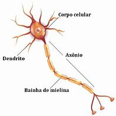

FUNCIONAMENTO NEUROBIOLÓGICO
CÉREBRO
O órgão mais importante do sistema nervoso central, que traz a consciência de quem o ser humano é, sendo responsável pelo gerenciamento de todas as atividades que o corpo executa, este é o cérebro. Desde a criação de uma pesquisa complexa, escrita de um artigo, prática de atividades físicas, batimento do coração, piscar dos olhos e capacidade de demonstração emocional – Todas as atividades são devidamente organizadas e dirigidas por este órgão dividido em dois hemisférios com peso aproximado de 1,5 quilogramas.
Com o foco voltado à pesquisa do seu funcionamento e interação com o mundo externo, é possível cada vez mais notar sua complexidade. Não obstante, com o avanço tecnológico, a forma de estudo e caracterização do seu funcionamento se dá através da neurociência. Esta ciência se aprofunda no funcionamento das células cerebrais, chamadas de neurônio, que emitem sinais e impulsos elétricos a partir de suas interações.
NEURÔNIO
O neurônio é a célula base do cérebro. Sua estrutura funcional caracteriza o funcionamento do sistema nervoso. Cada uma dessas células estabelecem uma conexão entre si, criando uma grande cadeia de interação ao receber estímulos provenientes do ambiente externo ou do próprio organismo. Estima-se que o ser humano possui cerca de 86 bilhões de neurônios em funcionamento no sistema nervoso, podendo ser classificados em três tipos: receptores, motores e associativos. Os neurônios receptores recebem estímulos sensoriais e conduzem o impulso nervoso. Os neurônios motores transmitem os impulsos motores (respostas ao estímulo). Os neurônios associativos estabelecem as ligações entre os neurônios receptores e os neurônios motores. Desta forma, é possível notar como estas células são extremamente pequenas e ao mesmo tempo de total importância para o órgão principal, cérebro.
Estrutura Celular Neural
A estrutura do neurônio em geral se resume ao corpo celular, que acomoda o núcleo e as organelas celulares; o axônio, uma prolongação única, revestida de mielina (camada lipídica que atua na condução dos impulsos nervosos) e responsável por conduzir os impulsos; e os dendritos, que são ramificações tanto do corpo celular quanto do axônio e realizam a comunicação entre os neurônios. Esta comunicação entre os neurônios é chamada de Sinapse. E é por meio das sinapses, que através do estímulo interno ou externo, um comando passa de um neurônio para outro, sendo direcionados à sua devida função.
MONITORAMENTO DA ATIVIDADE CEREBRAL
A atividade cerebral gerada através da interação elétrica entre os neurônios produz ondas eletromagnéticas e estas por sua vez possuem alterações, como na frequência, comprimento, amplitude e o período. As ondas são medidas em ciclos por segundo, Hertz (Hz). Essas ondas mudam sua forma de acordo com a atividade elétrica dos neurônios e estão sempre relacionadas com pequenas ou grandes alterações de estado (relaxamento, meditação, concentração e demais estados). Com base nos estudos realizados pelos doutores Andrew Huxley e Alan Hodgkin, vencedores do prêmio Nobel de Fisiologia em 1963, é possível hoje comparar a estrutura molecular do neurônio a um circuito elétrico. Este avanço possibilitou a engenheiros e físicos o desenvolvimento de projetos e protótipos baseados na forma e comportamento biológico.

Na década de 1970, o projeto liderado pelo Dr. J. Vidal criou o primeiro protótipo de interface cérebro–computador. Nos anos que se seguiram uma boa quantidade de empresas começaram a investir no estudo na atividade mental com um Eletroencefalograma (EEG). As direções e a evolução da interface cérebro-computador dependem da identificação dos sinais.
Com a melhora da capacidade de controle e mitigação de interferências externas, tornou-se possível definir os sinais necessários e criar algoritmos capazes de realizar a tradução das ondas cerebrais de forma eficiente. Para que essa comunicação seja possível é necessário o uso de equipamentos para a captação dos sinais cerebrais. A principal estratégia adotada é o uso do EEG, aparelho mais usado e estudado, por suas características de custo-benefício, portabilidade e rápida resposta. O modelo atual de EEG utiliza o sistema padrão internacional 10-20. O sistema 10-20, padronizou a maneira correta e mais eficiente de captação dos sinais neurais, garantindo maior fidelidade ao resultado. São distribuídos 21 eletrodos e colocados no couro cabeludo de acordo com dois pontos de referência:
- Nasion (localizado no topo do nariz entre as sobrancelhas);
- Inion (base do crânio atrás da cabeça);
As posições dos eletrodos são determinadas dividindo esses perímetros em intervalos de 10% ou 20%.

ONDAS CEREBRAIS
Cada indivíduo tem sua própria característica de atividade cerebral, porém é possível achar os padrões básicos de cada estado. Com a padronização torna-se viável o estudo dos estados básicos de consciência, sendo eles: Beta, Alpha, Teta e Delta. É possível distinguir cada uma destas ondas com base na atividade que está sendo realizada e qual estado mental ela possivelmente indica. Quando estudada por um especialista, a atividade cerebral pode indicar certas disfunções cerebrais, tumores, epilepsia dentre outros males.
Com a análise realizada a partir de um EEG, também é possível distinguir as ondas eletromagnéticas geradas pelo cérebro de acordo com a atividade à qual está sendo realizada. Com base nos padrões de estado das ondas cerebrais, estudos recentes – À exemplo do artigo publicado na VAEP-RITA Vol. 7, Núm. 4, nov. 2019 por Ana Rita Teixeira, Anabela Gomes, Joana Eloy, António José Mendes “Um estudo exploratório de BCIs no Ensino e Aprendizagem de programação (2019)” demonstram variações em duas destas (Beta e Gamma), sendo assim as ondas cerebrais podem ser divididas e caracterizadas nos seguintes estados:
- Delta (1-3) Hz: Remete à Consciência expandida, Cura e Recuperação
- Theta (4-8) Hz: Meditação, Intuição, Criatividade e Memória
- Alpha (9-13) Hz: Relaxamento, Visualização e Meditação
- Beta (14-17) Hz: Atenção, concentração e cognição
- High Beta (18-30) Hz: Movimento de membros inferiores
- Low Gamma (31-40) Hz: Processamento multissensorial
- High Gamma (41-50) Hz: Função cognitiva e memória
Delta
O estado Delta é o acesso mais baixo das frequências das ondas cerebrais e estão ligadas ao sono profundo. Algumas faixas de frequências no Delta são responsáveis pela liberação do HGH (hormônio do crescimento humano), que beneficia o desenvolvimento do corpo entre outras atividades relacionadas. A faixa Delta está entre 0.1 e 4 Hz.
Theta
Em um estado de relaxamento cada vez maior a mente entra no estado de Theta, onde a atividade cerebral é quase a mesma que a de sono. Nesse estado acontecem flashes das imagens do inconsciente, surtos criativos e memórias há muito tempo “esquecidas” que são ativadas. O estado de Theta seria semelhante a um estado profundo obtido com meditação. A faixa de frequência das ondas Theta está entre 4 e 7 Hz.
Alpha
No estado Alpha o corpo libera a sua capacidade de entrar em um estado de dormência e assim acessando estados de consciência. Ao relaxar o corpo experimenta uma sensação de paz e bem-estar, a atividade cerebral vai baixando rapidamente e entrando na onda Alpha. A faixa de ondas Alpha gira entre 7 e 12 Hz.
Beta
As ondas Beta atuam em funções cognitivas. Ao se concentrar para executar as tarefas, os neurônios vão transmitir as informações o mais rápido possível e assim permitir o alcance do estado de concentração, permitindo uma melhora da acuidade visual e coordenação. A faixa de frequência das ondas Betas gira em torno de 14 e 30 Hz.
High Beta
A onda denominada como High Beta tem mesma área de atuação em suas funções da Beta, porém com faixa de frequência de 18 e 30 Hz. Esta faixa indica uma “atenção” especial à atividade de cognição dos membros inferiores do corpo humano.
Gamma
As Ondas Gamma atendem estados de consciência, como o processamento cognitivo atento (por exemplo, enfocar um problema) ou a percepção atenta.
O estado Gamma atinge uma frequência de 31 Hz a 50 Hz. No momento que o cérebro tem a necessidade de processar várias informações ao mesmo tempo promove a interação das áreas necessárias do cérebro para um processamento de 40 Hz. Nesta etapa surgem os estados comportamentais Low Gamma: processamento multissensorial e integração de pensamentos. Quando se atinge o nível de variação de frequência na faixa de 41 Hz a 50 Hz. É a última “etapa” do estado Gamma, denominado de High Gamma. Nesta etapa é perceptível a influência nas correlações fisiológicas e tratamento de tarefas complexas.